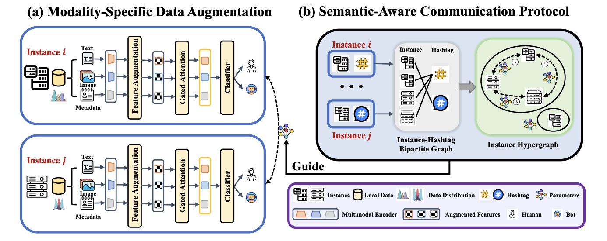
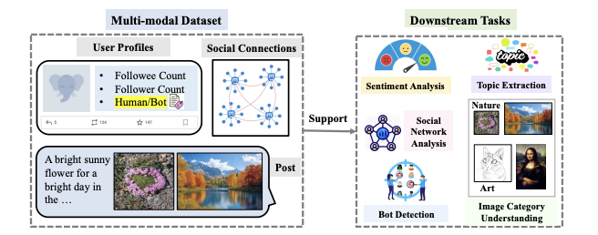
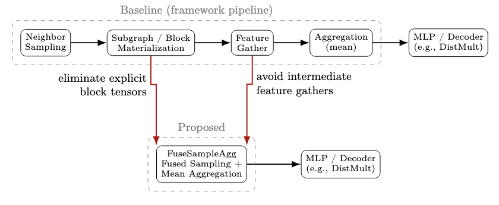
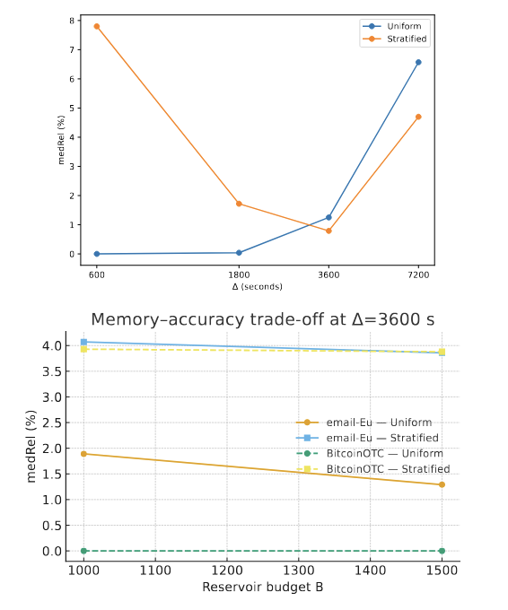

About
Experiences
 Sep. 2024 - Present
Sep. 2024 - Present
Sep. 2020 - Jun. 2024
Undergraduate Student @ Tongji University
Advisor: Prof. Shuili Yu and Assoc. Prof. Tian Li
2001
Publications

FediScan: Collaborative Social Bot Detection in the Fediverse
WWW 2026 (Oral)

FediData: A Comprehensive Multi-Modal Fediverse Dataset from Mastodon
CIKM 2025 (Resource Track)

FuseSampleAgg: One-Pass Neighborhood Estimation for Budgeted Knowledge-Graph Refresh and Validation
KSEM 2026

TempoTriads: Streaming Estimation of Temporal Triadic Motifs for Social-Computing Streams
ICSC 2025
Selected Honors & Awards
- First Prize, The 6th ChineseCSCW Cup Big Data Analytics Competition, Chinese Computer Federation (CCF), Nov. 2025
- First Prize, The 2nd OpenAtom Competition - OpenRank Cup Open Source Digital Ecosystem Analysis and Application Innovation Competition (OpenSODA), OpenAtom Foundation, May 2025
- Tongji University Undergraduate Outstanding Student Scholarship, Tongji University, Dec. 2023
- Excellence Award, National College Students' Open Class Showcase on Ideological and Political Theory Courses, Mar. 2023
Top